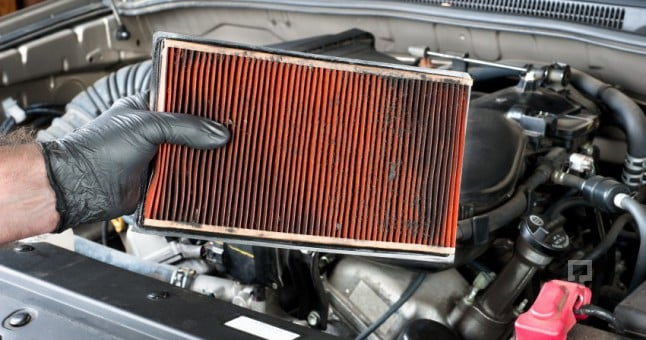

Bir motorun çalışması ve gerekli olan yakıtın yakılabilmesi için oksijene ihtiyaç vardır. Bujilerin kıvılcım yaratabilmesi için yine oksijene ihtiyaç vardır. Oksijen teminini havadan karşılayan motor sistemleri dışarıdaki havayı temizleyip silindire alabilmek için bir parçaya ihtiyaç duyar. Bu parça hava filtresi olarak adlandırılır.

Hava filtresi motor dışındaki havayı bujilerin kıvılcım atacağı mekanizmanın içerisine alıp, içerideki havayı da dışarı atmak için kullanılır. Büyük bir hava kütlesini içerisine aldıktan sonra elbette ki bir temizleme işleminden geçirilmesi gerekir. Bu temizleme işlemi yine hava filtresi içerisinde bulunan özel filtreleme sistemi ile gerçekleştirilmektedir. Bu parça otomobillerin çekiş gücü üzerinde de etkilidir. Hava filtresinin optimum derecede çalışmaması sonucunda silindirler de randıman vermez silindirlerin randıman vermemesi sonucunda araç yeterli çekiş gücüne ulaşamaz ve bu yeterli çekiş gücüne ulaşabilmek için daha fazla yakıt tüketir. Yani hava filtresinin yakıt tüketiminde önemli bir rolü bulunmaktadır.
Hava filtresi fiziki bir zarar görmüşse doğrudan yeni bir parça ile değiştirilmelidir. Ancak tıkanma gibi durumlar meydana gelmişse değiştirilmesi en kolay parçadır. Doğrudan kaputu açtığınızda 4 vida ile bağlanmış durumdadır. 4 adet vidayı açtığınızda doğrudan çıkartıp tıkanıklığı kontrol edebilirsiniz. Ayrıca temizleyebilirsiniz de.
Yeni nesil dizel araçlarda 1 lt yakıt tüketiminde yaklaşık olarak 14 bin lt hava gereklidir. Bu havanın doğrudan yakıt için kullanılması durumunda motor kısa vadede bozulacağı gibi, filtreleme sisteminin kötü olmasıyla da zaman içerisinde silindirde arızalar meydana gelecektir. Motor aşınması ve performans düşüklüğü problemlerini engelleyebilmek için aracınıza en uygun ve en kaliteli filtreyi kullanmanız gerekir. Eğer filtreniz kötü ise filtrede tıkanmalar meydana gelir. Aynı zamanda silindirin randıman bozukluğu vermesine neden olur.